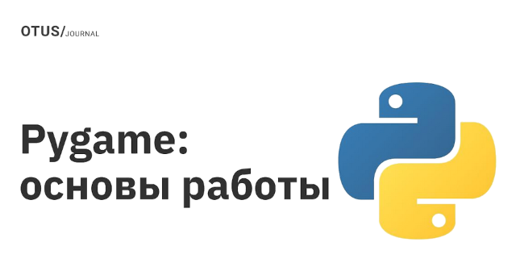

Здесь собраны советы новичкам, как быстро начать

Как начать создание сайта с использованием Python и фреймворка Django
Создание сайта является увлекательным и творческим процессом, который может быть значительно упрощен с использованием языка программирования Python и фреймворка Django. Python - это мощный и популярный язык программирования, известный своей простотой и выразительностью. Django, с другой стороны, является одним из наиболее популярных фреймворков для разработки веб-приложений на Python. В этой статье мы рассмотрим преимущества использования Python и Django для создания сайта, а также шаги, необходимые для начала процесса разработки.
Зачем использовать Python и Django для создания сайта
Использование Python и Django для создания сайта имеет ряд преимуществ, которые делают их популярным выбором среди разработчиков:
- Преимущества использования Python: Python обладает простым и понятным синтаксисом, который делает его отличным языком для начинающих программистов. Он также имеет обширную библиотеку, которая предоставляет множество инструментов для разработки веб-приложений.
- Преимущества использования Django: Django предоставляет мощный и гибкий инструментарий для разработки веб-приложений. Он облегчает создание и настройку баз данных, обработку URL-маршрутов, управление пользователями и аутентификацию, а также работу с шаблонами и статическими файлами.
Шаги для начала создания сайта с использованием Python и Django
Далее приведены основные шаги, которые необходимо выполнить для начала создания сайта с использованием Python и Django:
- Изучение Python: Прежде чем приступить к разработке веб-приложений с использованием Django, рекомендуется ознакомиться с основами языка Python. Вы можете использовать онлайн-ресурсы, книги или видеокурсы для изучения Python.
- Установка Python и Django: Следующим шагом является установка Python и фреймворка Django на ваш компьютер. Вы можете использовать официальные сайты Python и Django для загрузки и установки последних версий соответствующих пакетов.
- Создание виртуальной среды: Рекомендуется создать виртуальную среду для изоляции зависимостей вашего проекта. Виртуальная среда позволяет управлять установленными пакетами и их версиями независимо от других проектов на вашей системе.
- Создание нового проекта Django: После создания виртуальной среды вы можете создать новый проект Django с использованием команды django-admin startproject projectname. Это создаст необходимую структуру каталогов и файлов для вашего проекта.
- Создание и настройка базы данных: Django предоставляет поддержку для различных баз данных. Вы можете настроить ваш проект для работы с выбранной базой данных, определив соответствующие параметры в файле настроек.
- Создание и настройка приложений Django: В Django веб-приложение представляет собой набор моделей, представлений и шаблонов, которые работают вместе для реализации определенного функционала. Вы можете создать новое приложение с использованием команды python manage.py startapp appname и настроить его в файле настроек проекта.
- Разработка моделей: Модели Django представляют собой объекты, которые отображаются на таблицы в базе данных. Определите модели для вашего приложения, задав поля и отношения между ними.
- Создание URL-маршрутов: URL-маршруты определяют, какие действия должны быть выполнены при обращении к определенным URL-адресам. Определите URL-маршруты для вашего приложения в файле urls.py.
- Создание и настройка представлений: Представления Django определяют логику обработки запросов и генерации ответов. Создайте представления, которые будут отвечать на запросы клиентов и возвращать соответствующие данные или отображения.
- Создание и настройка шаблонов: Шаблоны Django представляют собой файлы, которые описывают внешний вид ваших веб-страниц. Создайте шаблоны HTML для различных страниц вашего сайта и настройте их использование в представлениях.
- Создание и настройка статических файлов: Статические файлы, такие как CSS, JavaScript, изображения и другие ресурсы, могут быть использованы для оформления и функциональности вашего сайта. Создайте каталог для статических файлов и настройте их использование в шаблонах и представлениях.
- Тестирование и отладка: После разработки вашего сайта с использованием Python и Django рекомендуется провести тестирование и отладку, чтобы убедиться в его правильной работе и исправить возможные ошибки.
Дополнительные ресурсы и рекомендации
Создание сайта с использованием Python и Django может быть увлекательным и интересным опытом. Вот несколько дополнительных ресурсов и рекомендаций, которые могут быть полезными для вашего пути разработчика:
- Официальная документация Python: https://docs.python.org/
- Официальная документация Django: https://docs.djangoproject.com/
- Курсы по Python и Django на платформах, таких как Coursera, Udemy и других. Сейчас очень много вариантов, если боитесь запутаться, то смотрите подборку курсы по изучению Python.
- Участие в сообществах Python и Django для обмена опытом и получения помощи от опытных разработчиков.
Заключение
Использование Python и фреймворка Django позволяет упростить и ускорить процесс разработки веб-сайтов. В этой статье мы рассмотрели преимущества использования Python и Django, а также основные шаги для начала создания сайта с их помощью. Надеюсь, что эта статья будет полезной и вдохновит вас на создание собственных удивительных веб-приложений!